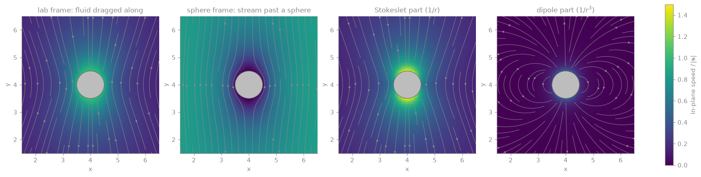
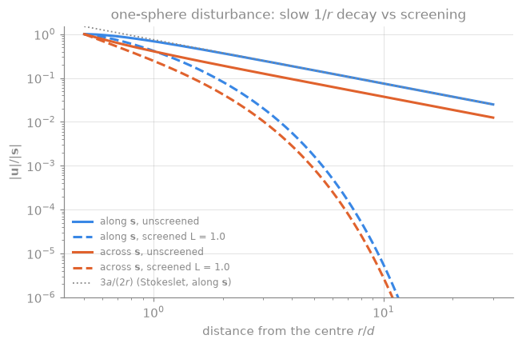
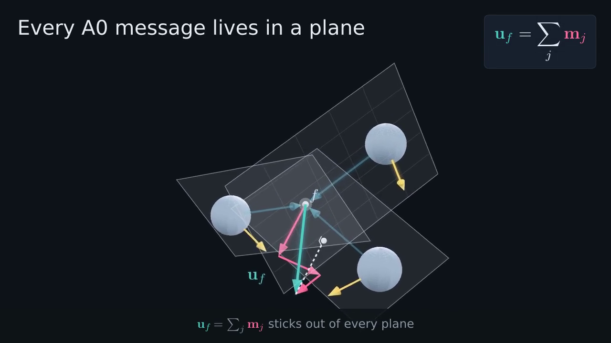
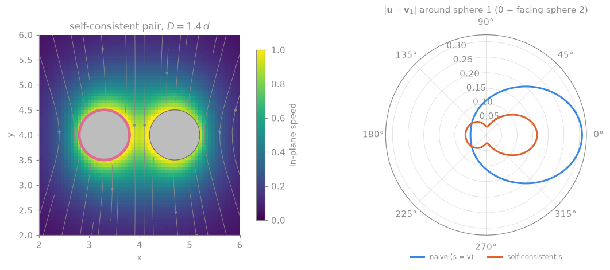
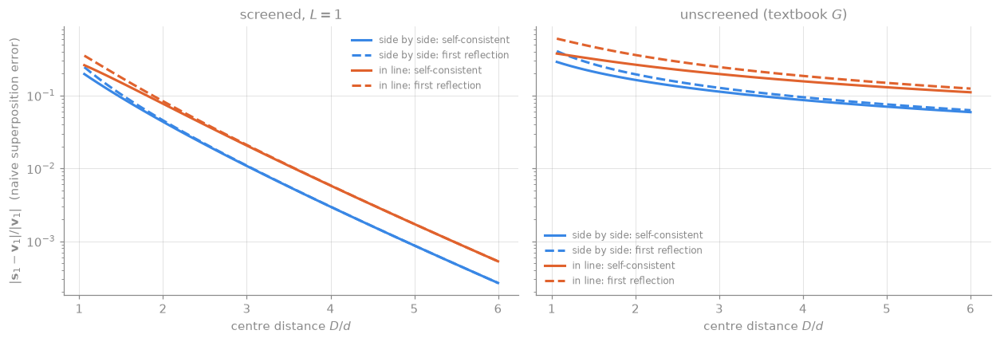
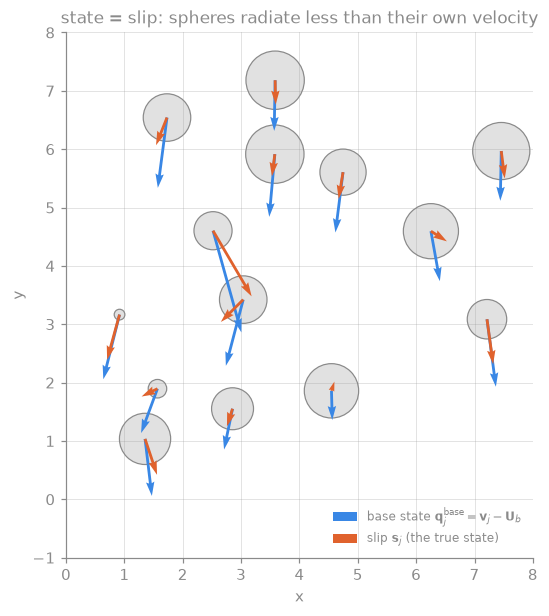
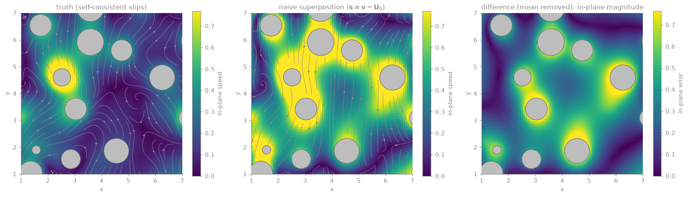
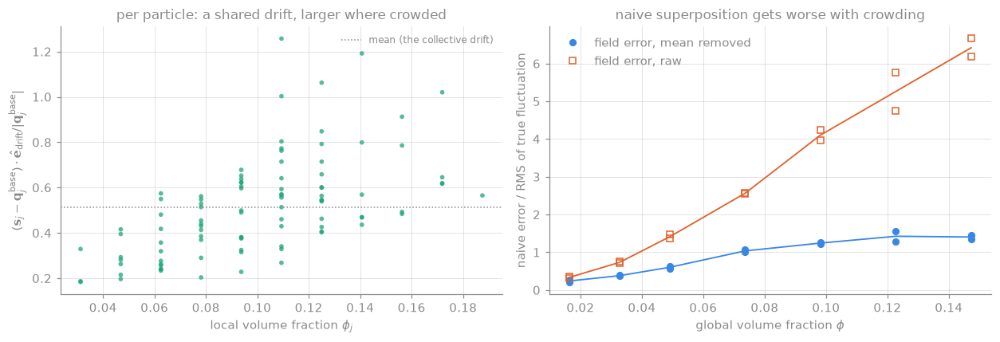
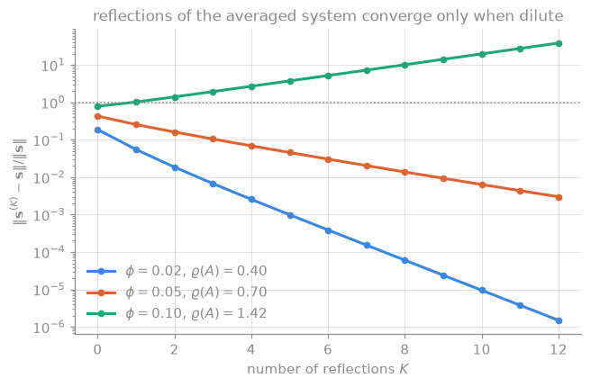
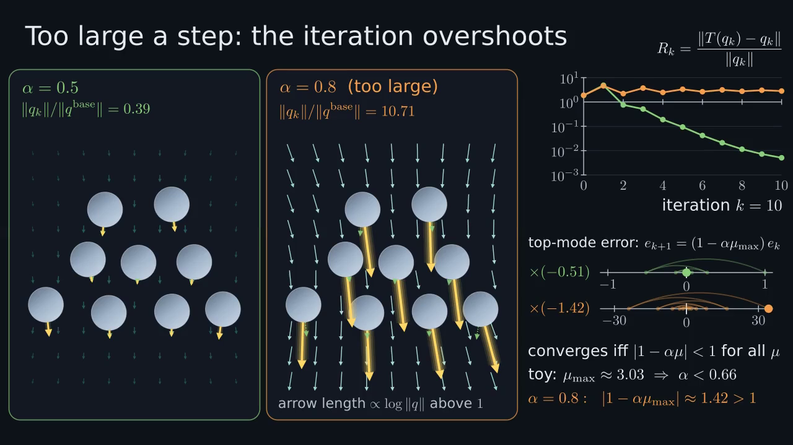

One-particle disturbances and superposition#
What you will learn
The exact Stokes flow around one translating sphere: a \(1/r\) Stokeslet plus a \(1/r^3\) dipole, and what the toy’s screening factor does to it. You will check no-slip, incompressibility and the Stokes equations numerically.
Why the one-sphere field lies in \(\mathrm{span}(\mathbf x, \mathbf s)\), transforms as a vector under \(O(3)\) and is fore-aft symmetric. A learned kernel must keep the first two properties and may break the third.
Why the flow of many spheres is a sum of one-sphere fields (linearity), and which velocity each sphere has to carry in that sum.
How large the error of naive superposition with the particles’ own velocities is, as a function of separation and volume fraction, where on the slice it sits, and how much of it is a collective drift of the whole suspension rather than local crowding.
Why this motivates two things in the surrogate: a per-particle state found self-consistently (Part III), and a learned kernel in place of the Stokes formula (Part II).
Prerequisites: Lesson 01a (the toy snapshot and the surface-average identity). Vectors, rotations and reflections are used as in the MolSSI e3nn course.
import time
from dataclasses import replace
import numpy as np
import matplotlib.pyplot as plt
import torch
from course_utils import plotting as cp
from course_utils import toy_data as td
from course_utils.toy_data import ToyConfig, ToySnapshot, make_snapshot, stokes_sphere_matrix
from course_utils.equivariance import check_equivariance, span_residual, report
torch.set_num_threads(min(4, torch.get_num_threads()))
T_START = time.time()
cfg = ToyConfig() # the course defaults: a = 0.5, screening length L = 1
a, Lsc = cfg.radius, cfg.screening_length
1. The flow around one sphere#
1.1 The formula#
A sphere of radius \(a\) moves with velocity \(\mathbf s\) through fluid that is at rest far away. The motion is slow, so inertia is negligible and the fluid obeys the Stokes equations (viscosity \(\mu\), pressure \(p\)):
With no-slip on the sphere (\(\mathbf u = \mathbf s\) on \(|\mathbf x| = a\)) the solution is classical [Happel and Brenner, 1983]. Write \(\mathbf x\) for the offset from the centre, \(r = |\mathbf x|\) and \(\hat{\mathbf x} = \mathbf x / r\):
The two pieces have distinct jobs:
the Stokeslet is the flow made by a point force \(\mathbf F = 6\pi\mu a\,\mathbf s\) (Stokes drag). It decays slowly, like \(1/r\), and carries all the pressure;
the dipole decays like \(1/r^3\). It is a potential flow (no pressure, no vorticity) and its only job is to make the sum equal \(\mathbf s\) exactly on the surface: at \(r = a\) the two \(\hat{\mathbf x}\hat{\mathbf x}^{\mathsf T}\) terms cancel and the two \(I\) terms add to \(I\).
The toy multiplies \(G\) by a screening factor \(e^{-(r-a)/L}\) (default \(L = 1\)). It equals 1 on the surface, so no-slip is unchanged, and it makes each disturbance die within a few diameters. It stands in crudely for the way a crowd of particles damps a disturbance, and it keeps sums over many particles bounded in the toy’s open box. We will see in Section 1.3 what it costs.
We implement \(G\mathbf s\) in PyTorch, with the same symbols, and compare it with the toy’s NumPy version. The torch version lets us take exact derivatives with autograd below.
def stokes_u(x, s, a=0.5, L=None):
"""u = G(x) s for one sphere; x, s (..., 3) torch tensors. Stokeslet + dipole, optional screening."""
r = x.norm(dim=-1, keepdim=True)
xh = x / r
xs = (xh * s).sum(-1, keepdim=True) # x^ . s
stokeslet = 3 * a / (4 * r) * (s + xh * xs)
dipole = a**3 / (4 * r**3) * (s - 3 * xh * xs)
u = stokeslet + dipole
return u * torch.exp(-(r - a) / L) if L is not None else u
rng = np.random.default_rng(0)
x_np = rng.normal(size=(500, 3)) * 2.0
x_np = x_np[np.linalg.norm(x_np, axis=1) > a] # outside the sphere
s_np = np.array([0.3, -1.0, 0.2])
for L in (None, Lsc):
ours = stokes_u(torch.as_tensor(x_np), torch.as_tensor(s_np), a, L).numpy()
toy = td.stokes_sphere_velocity(x_np, s_np, a, L)
print(report(f"torch stokes_u == toy stokes_sphere_velocity (L = {L})", np.abs(ours - toy).max(), 1e-12))
PASS torch stokes_u == toy stokes_sphere_velocity (L = None): max error 2.2e-16 (tol 1e-12)
PASS torch stokes_u == toy stokes_sphere_velocity (L = 1.0): max error 3.3e-16 (tol 1e-12)
1.2 What it looks like#
A single sphere in the toy is a snapshot with one particle, no backflow, and slip equal to its velocity. We draw the plane \(z = 4\) through its centre, with the sphere moving down (\(-y\)). The same flow looks different in two frames: in the lab frame the fluid far away is at rest and the sphere drags its neighbourhood along; in the sphere frame (subtract \(\mathbf s\)) a uniform stream flows up past a sphere at rest. We also split the lab-frame field into its two pieces.
cfg1 = replace(cfg, n_particles=1, backflow=False)
centre = np.full((1, 3), cfg.box / 2)
s1 = np.array([[0.0, -1.0, 0.0]])
one = ToySnapshot(positions=centre, velocity=s1, slip=s1.copy(), backflow=np.zeros(3),
phi_local=np.zeros(1), config=cfg1)
one_unscreened = ToySnapshot(centre, s1, s1.copy(), np.zeros(3), np.zeros(1), replace(cfg1, screening_length=None))
pts_c = np.random.default_rng(1).normal(size=(200, 3)) * 1.5 + centre
pts_c = pts_c[one.exterior_mask(pts_c)]
direct = td.stokes_sphere_velocity(pts_c - centre, s1[0], a, Lsc)
print(report("consistency (same construction): one-sphere snapshot field == G(x - r) s",
np.abs(one.field(pts_c) - direct).max(), 1e-12))
PASS consistency (same construction): one-sphere snapshot field == G(x - r) s: max error 0.0e+00 (tol 1e-12)

Read the four panels from left to right.
Lab frame. All the fluid nearby moves down with the sphere, at full speed on its surface. The streamlines bow away from the sphere in front of it (below) and close back in behind it. The colour fades slowly: that is the \(1/r\) decay at work, and the disturbance is still visible several diameters away.
Sphere frame. The same field minus \(\mathbf s\): a stream that comes from below, parts around the sphere and closes behind it. The picture is symmetric between front and back. Stokes flow has no wake.
Stokeslet. Almost the whole far field, but on its own it does not match the sphere velocity on the surface: it is brightest (speed \(\tfrac32|\mathbf s|\), the top of the colour scale) at the front and back, and dimmer at the sides.
Dipole. A short-range correction. On the axis of motion it points against \(\mathbf s\), at the sides along it. On the surface the Stokeslet alone gives \(\tfrac32\mathbf s\) at the front and back and \(\tfrac34\mathbf s\) at the sides; the dipole adds \(-\tfrac12\mathbf s\) and \(+\tfrac14\mathbf s\), so the sum is exactly \(\mathbf s\) everywhere.
The figure uses the unscreened field so that you see the textbook solution. The toy’s screened field has the same near-field shape and dies off faster; Section 1.3 compares the two.
The animation below builds the same picture and then adds more spheres, which is where this lesson goes next.
Animation S3, superposition. One sphere first: in its own frame a uniform stream wraps around it, and a Galilean shift turns that into the lab-frame disturbance \(G(\mathbf x - \mathbf r_1)\,\mathbf v_1\). Five more spheres appear, and at a marked point their contributions add tip to tail; distant spheres contribute almost nothing. The last part previews Sections 2 to 4 and Part III: each sphere also sits in the flow of the others (their surface average \(W_i\)), so its slip is \(\mathbf s_i = \mathbf v_i - W_i\), not \(\mathbf v_i\), and the error of the naive sum \(\sum_j G\,\mathbf v_j\) is largest at the close pair. The clip is drawn on a dark stage in both page themes. Explore the same toy in 3D: open the interactive version in a new tab, or show it here:
Interactive 3D version: superposition versus self-consistent slip (toy)
1.3 Checking the physics, and what screening costs#
Every claim in Section 1.1 can be checked to round-off. No-slip is pointwise and exact for one sphere, with or without screening.
dirs, _ = td.lebedev_sphere(31) # 350 directions on the unit sphere
surf = a * dirs
for L in (None, Lsc):
u_s = td.stokes_sphere_velocity(surf, s_np, a, L)
print(report(f"no-slip u = s on every surface point (L = {L})", np.abs(u_s - s_np).max(), 1e-12,
f"{len(surf)} points"))
PASS no-slip u = s on every surface point (L = None): max error 2.2e-16 (tol 1e-12) [350 points]
PASS no-slip u = s on every surface point (L = 1.0): max error 2.2e-16 (tol 1e-12) [350 points]
For the Stokes equations we need derivatives. Autograd differentiates stokes_u analytically, so the
divergence and the Laplacian it returns are exact up to float64 round-off. We normalise each residual by
the size of the terms in it, because second derivatives grow like \(1/r^3\) near the surface.
def derivatives(L, x):
"""Divergence, Laplacian and the field itself at points x (P, 3), by autograd in float64."""
x = x.clone().requires_grad_(True)
s = torch.as_tensor(s_np)
u = stokes_u(x, s, a, L)
grads = [torch.autograd.grad(u[:, i].sum(), x, create_graph=True)[0] for i in range(3)] # du_i/dx_k
div = sum(g[:, i] for i, g in enumerate(grads))
lap = torch.stack([sum(torch.autograd.grad(g[:, k].sum(), x, retain_graph=True)[0][:, k] for k in range(3))
for g in grads], -1)
return div.detach(), lap.detach(), grads
xq = torch.as_tensor(x_np[:300])
div, lap, grads = derivatives(None, xq)
grad_scale = torch.stack([g.detach().abs().amax(-1) for g in grads], -1).amax(-1) # |du/dx| per point
print(report("unscreened: div u = 0", float((div.abs() / grad_scale).max()), 1e-12, "relative to |grad u|"))
xg = xq.clone().requires_grad_(True)
p = 1.5 * a * (xg * torch.as_tensor(s_np)).sum(-1) / xg.norm(dim=-1) ** 3 # mu = 1
grad_p = torch.autograd.grad(p.sum(), xg)[0]
mom = (lap - grad_p).abs().amax(-1) / (lap.abs().amax(-1) + grad_p.abs().amax(-1))
print(report("unscreened: mu lap u = grad p", float(mom.max()), 1e-12, "relative to the terms"))
div_s, lap_s, grads_s = derivatives(Lsc, xq)
gs_scale = torch.stack([g.detach().abs().amax(-1) for g in grads_s], -1).amax(-1)
rel_div = (div_s.abs() / gs_scale).numpy()
print(f"screened (L = {Lsc}): |div u| / |grad u| has median {np.median(rel_div):.2f}, max {rel_div.max():.2f}")
# momentum with the same pressure screened the same way, p S(r)
xg = xq.clone().requires_grad_(True)
p_s = 1.5 * a * (xg * torch.as_tensor(s_np)).sum(-1) / xg.norm(dim=-1) ** 3 * torch.exp(-(xg.norm(dim=-1) - a) / Lsc)
grad_ps = torch.autograd.grad(p_s.sum(), xg)[0]
mom_s = ((lap_s - grad_ps).abs().amax(-1) / (lap_s.abs().amax(-1) + grad_ps.abs().amax(-1))).numpy()
print(f"screened (L = {Lsc}): |lap u - grad p| relative to the terms has median {np.median(mom_s):.2f}")
PASS unscreened: div u = 0: max error 1.4e-15 (tol 1e-12) [relative to |grad u|]
PASS unscreened: mu lap u = grad p: max error 1.2e-15 (tol 1e-12) [relative to the terms]
screened (L = 1.0): |div u| / |grad u| has median 0.67, max 1.44
screened (L = 1.0): |lap u - grad p| relative to the terms has median 0.79
The textbook field passes both tests at round-off. The screened field fails both: its divergence is a sizeable fraction of its gradient, and momentum does not balance either (shown here with the pressure screened by the same factor). So the toy’s field is a defined construction that keeps the Stokes shape near each sphere, not a solution of the Stokes equations. That is a deliberate toy simplification: screening keeps the open-box sums finite and the neighbourhoods local, at the price of mass and momentum conservation. A real suspension does not multiply the flow by a decaying factor. None of the course’s lessons rely on \(\nabla\cdot\mathbf u = 0\).
How fast does the disturbance decay? Along the direction of motion and across it:

Unscreened, the disturbance falls only like \(1/r\): along the direction of motion it is still about \(3a/(2r)\), which is 3 % of \(|\mathbf s|\) at 25 diameters. Across the motion it is half that. The dipole matters only within a diameter or two, where the curves bend away from the dotted line. The screened curves drop exponentially after a couple of diameters.
The \(1/r\) decay is why one sphere’s influence reaches so far, and why summing many unscreened Stokeslets in a large box does not converge: there are about \(4\pi r^2\,dr\cdot n\) spheres at distance \(r\), each contributing \(\sim 1/r\), so the sum grows with the box. In a real sedimenting suspension the mean is fixed by the backflow and the mean pressure gradient (Batchelor’s renormalisation); whether the velocity fluctuations are screened is a long-debated question (Caflisch and Luke), and Brinkman-type screening is firmly established only for fixed beds of particles [Guazzelli and Morris, 2011]. The toy sidesteps all of this with \(e^{-(r-a)/L}\).
1.4 Symmetry: why the kernel lies in a plane#
Expand \(G(\mathbf x)\mathbf s\) and collect terms. Every term is either along \(\mathbf x\) or along \(\mathbf s\):
with \(S(r) = e^{-(r-a)/L}\) (or 1). The coefficients depend only on the scalars \(r\) and \(\mathbf x\cdot\mathbf s\), which no rotation or reflection changes. Two consequences follow, and both are checked below.
The velocity lies in \(\mathrm{span}(\mathbf x, \mathbf s)\). This is exactly the form of every message of the A0 network (Lesson 02c), which replaces \(\alpha\) and \(\beta\) by learned functions of more scalars. Those include \(|\mathbf q_j|\), so a learned message need not be linear in the state, whereas \(G\mathbf s\) is.
The map \((\mathbf x, \mathbf s) \mapsto G(\mathbf x)\mathbf s\) is \(O(3)\)-equivariant: rotate or reflect both inputs and the output rotates or reflects with them.
Geometrically: the offset \(\mathbf x\) and the slip \(\mathbf s\) span a plane through the query point, and each sphere’s contribution is an arrow in its own plane. With several spheres the planes differ, so the sum points in a direction none of them contains. The animation still shows this for three spheres, in the notation of the A0 network (message \(\mathbf m_j\), total \(\mathbf u_f\)).


Fig. 1 Every one-particle message lies in the plane spanned by the offset to the query point and the particle’s state; the sum \(\mathbf u_f = \sum_j \mathbf m_j\) is a general 3D vector. The full animation S2, with an interactive 3D version, plays in Lesson 02c, Section 1.#
def alpha_beta_form(x, s, L=Lsc):
r = x.norm(dim=-1, keepdim=True)
S = torch.exp(-(r - a) / L)
xs = (x * s).sum(-1, keepdim=True)
return (3 * a / (4 * r**3) - 3 * a**3 / (4 * r**5)) * xs * S * x + (3 * a / (4 * r) + a**3 / (4 * r**3)) * S * s
xt = torch.as_tensor(x_np)
st = torch.as_tensor(rng.normal(size=x_np.shape)) # a different slip at every point
u_t = stokes_u(xt, st, a, Lsc)
print(report("G s == alpha x + beta s", float((u_t - alpha_beta_form(xt, st)).abs().max()), 1e-12))
print(report("G s lies in span(x, s)", float(span_residual(u_t, xt, st).max()), 1e-12, "relative residual"))
check_equivariance(lambda x, s: stokes_u(x, s, a, Lsc), (xt, st), ("vector", "vector"),
name="one-sphere kernel (x, s) -> G(x) s");
PASS G s == alpha x + beta s: max error 1.1e-16 (tol 1e-12)
PASS G s lies in span(x, s): max error 2.7e-15 (tol 1e-12) [relative residual]
PASS one-sphere kernel (x, s) -> G(x) s: max error 7.8e-16 (tol 1e-12) [5 random g in O(3), det = [-1, 1]]
What breaks it? Suppose someone “simplifies” the kernel by always pointing the Stokeslet’s extra term down, along gravity, instead of along \(\hat{\mathbf x}\), the direction from the sphere to the query point. The result looks plausible for settling spheres, but it uses a fixed direction that does not rotate with the inputs.
down = torch.tensor([0.0, -1.0, 0.0], dtype=torch.float64)
def kernel_with_fixed_direction(x, s):
r = x.norm(dim=-1, keepdim=True)
return 3 * a / (4 * r) * (s + down * (down * s).sum(-1, keepdim=True)) # x^ replaced by gravity
try:
check_equivariance(kernel_with_fixed_direction, (xt, st), ("vector", "vector"), name="kernel with gravity built in")
except AssertionError as err:
print("caught:", err)
FAIL kernel with gravity built in: max error 4.6e-01 (tol 1e-12) [5 random g in O(3), det = [-1, 1]]
caught: kernel with gravity built in: equivariance error 4.629e-01 >= tol 1.0e-12
A third property is special to Stokes flow. Because \(\alpha\,\mathbf x\) is even in \(\mathbf x\) (both factors flip) and \(\beta\) depends only on \(r\), the field is fore-aft symmetric: \(\mathbf u(-\mathbf x) = \mathbf u(\mathbf x)\). The flow in front of a sphere mirrors the flow behind it.
fa = (stokes_u(-xt, st, a, Lsc) - u_t).abs().max()
print(report("fore-aft symmetry u(-x) = u(x)", float(fa), 1e-12))
PASS fore-aft symmetry u(-x) = u(x): max error 0.0e+00 (tol 1e-12)
At the particle Reynolds numbers of the research simulations this symmetry is gone: inertia leaves a wake behind each sphere. A model built from \(\mathbf x\), \(\mathbf s\) and invariants can represent a wake, because nothing forces \(\alpha\) to be odd in \(\mathbf x\cdot\mathbf s\), but it has to learn the shape from data. This is the first reason the surrogate learns its one-particle kernel instead of using \(G\).
2. Adding disturbances together#
2.1 Linearity#
The Stokes equations are linear: if \((\mathbf u_1, p_1)\) and \((\mathbf u_2, p_2)\) are solutions, so is their sum. So it is tempting to build the flow of \(N\) spheres as
The toy’s field is exactly this sum, with \(\mathbf s_j\) the self-consistent slips (the cell below only confirms that the toy is built this way; it is a consistency check, not a test of physics). The open question is which velocity \(\mathbf s_j\) each sphere should carry. Linearity says nothing about it.
snap = make_snapshot(cfg, seed=0) # 96 spheres, the course default
pts = snap.sample_exterior(2000, rng=np.random.default_rng(2))
G_all = stokes_sphere_matrix(pts[:, None, :] - snap.positions[None], a, Lsc) # (P, N, 3, 3)
superpose = lambda states: snap.backflow + np.einsum("pnij,nj->pi", G_all, states)
true = snap.field(pts)
print(report("consistency (same construction): toy field == U_b + sum_j G(x - r_j) s_j",
np.abs(superpose(snap.slip) - true).max(), 1e-12))
PASS consistency (same construction): toy field == U_b + sum_j G(x - r_j) s_j: max error 0.0e+00 (tol 1e-12)
2.2 Two spheres: the obvious guess fails#
Take two spheres, both moving down with velocity \(\mathbf v\), with centres a distance \(D\) apart. The obvious guess is to let each sphere radiate its own velocity, \(\mathbf s_j = \mathbf v_j\). Then the field on sphere 1’s surface is \(\mathbf v_1 + G(\mathbf x - \mathbf r_2)\mathbf v_2\), not \(\mathbf v_1\). The second sphere’s flow comes on top, and no-slip is broken. Sphere 1 sits in the fluid that sphere 2 drags down, so it moves more slowly relative to that fluid than relative to the fluid far away.
The toy’s correction is the condition from Lesson 01a, Section 3.4: choose the slips so that the field averaged over each sphere’s surface equals that sphere’s velocity,
where \(\widetilde W_i\) is the exact flow the other spheres make around sphere \(i\), averaged with the toy’s 50-point Lebedev rule. (The tilde marks the toy’s exact interaction; plain \(W_i\) is reserved for the model’s prediction in Part III.) The slip \(\mathbf s_i\) is the particle’s velocity relative to the fluid around it: the state \(\mathbf q_i\) of Lesson 01a. It is linear in \(\mathbf s\), so for \(N\) spheres it is a \(3N \times 3N\) linear system, \((I + A)\,\mathbf s = \mathbf v - \mathbf U_b\).
We build two-sphere snapshots with a small builder, written from the toy’s public pieces as in Lesson 01a.
For pairs we switch the backflow off. Naive superposition is then self_consistent=False, which sets
\(\mathbf s = \mathbf v - \mathbf U_b\).
def build_snapshot(positions, velocity, cfg, grid=None):
"""The toy's truth for given particle arrays (same steps as make_snapshot)."""
grid = np.eye(3) if grid is None else np.asarray(grid)
phi = cfg.volume_fraction
ub = -phi / (1 - phi) * velocity.mean(0) if cfg.backflow else np.zeros(3)
slip = td.solve_slip(positions, velocity, ub, cfg, grid)
return ToySnapshot(positions, velocity, slip, ub,
td.local_volume_fraction(positions, cfg.radius, cfg.phi_radius), cfg, grid)
def surface_average(sn):
"""Field averaged over each sphere's surface with the toy's 50-point Lebedev rule: (N, 3)."""
sp, w = td.surface_points(sn.positions, sn.config.radius, sn.config.lebedev_order, grid=sn.grid)
return np.einsum("l,nlc->nc", w, sn.field(sp.reshape(-1, 3)).reshape(sn.n, -1, 3))
cfg2 = replace(cfg, n_particles=2, backflow=False)
D = 1.4 # centre distance, in units of d = 1
pair_pos = centre + np.array([[-D / 2, 0, 0], [D / 2, 0, 0]]) # side by side
pair_vel = np.array([[0.0, -1.0, 0.0], [0.0, -1.0, 0.0]])
pair_naive = build_snapshot(pair_pos, pair_vel, replace(cfg2, self_consistent=False))
pair_true = build_snapshot(pair_pos, pair_vel, cfg2)
print("naive slips:\n", pair_naive.slip.round(3), "\nself-consistent slips:\n", pair_true.slip.round(3))
for name, sn in (("naive superposition", pair_naive), ("self-consistent slips", pair_true)):
err = np.abs(surface_average(sn) - sn.velocity).max()
try:
assert err < 1e-12, f"surface average misses the particle velocity by {err:.3f}"
print(report(f"{name}: <u>_surface == v", err, 1e-12))
except AssertionError as e:
print(f"FAIL {name}: {e}")
naive slips:
[[ 0. -1. 0.]
[ 0. -1. 0.]]
self-consistent slips:
[[-0. -0.89 -0. ]
[ 0. -0.89 0. ]]
FAIL naive superposition: surface average misses the particle velocity by 0.124
PASS self-consistent slips: <u>_surface == v: max error 2.2e-16 (tol 1e-12)
Naive superposition fails the averaged no-slip condition by about a tenth of the velocity at this separation (printed above). The self-consistent slips pass. Both slips are smaller than \(|\mathbf v|\): each sphere is partly carried by the other’s flow. (In real Stokes flow two spheres that are pulled by the same force fall faster together than apart. The toy prescribes the velocities instead of the forces, so the same physics appears as a smaller slip.)
The average is right, but what about individual surface points? The polar plot walks once around sphere 1’s equator in the \(xy\) plane (the plane through both centres), starting at the side that faces sphere 2.
naive |u - v_1| on the ring: 0.308 facing sphere 2, 0.050 on the far side
self-consistent |u - v_1| on the ring: 0.164 facing sphere 2, 0.066 on the far side

On the left, the two spheres drag a shared column of fluid down; the magenta ring marks the path of the polar plot. On the right, the naive curve (blue) is largest on the side that faces sphere 2, where sphere 2’s flow is strongest, and small on the far side. The self-consistent slip (orange) removes the average of that extra flow: the mismatch facing the neighbour drops to about half, and on the far side it is about as large as before, or slightly larger, because one uniform slip correction cannot follow a flow that varies across the sphere (the printed values). The surface average is exact, the pointwise values are not.
Removing that pointwise remainder would need the near-field corrections of the full method of reflections [Happel and Brenner, 1983]: higher multipoles on each sphere that cancel the neighbour’s flow point by point, then the flow those make, and so on. The toy keeps only the uniform part of each correction (one slip vector per sphere). Sections 2.3 and 4.1 apply the same reflect-and-correct idea to that reduced, surface-averaged system; we call it reflections of the averaged system to keep the two apart. Real simulations contain all of it, plus lubrication between nearly touching spheres. This is the second reason the surrogate learns its kernel: a learned pair message can absorb near-field effects that a single-sphere formula with one slip vector cannot.
2.3 How the error depends on separation#
Now we sweep the separation \(D\) for two orientations of the pair: side by side (offset across the motion) and in line (one behind the other). For each we record the relative slip correction \(|\mathbf s_1 - \mathbf v_1| / |\mathbf v_1|\), which is exactly what naive superposition gets wrong, and compare with the first reflection of the averaged system, \(\mathbf s \approx \mathbf v - A\mathbf v\): the neighbour’s flow evaluated with the naive slips.
Ds = np.linspace(1.06, 6.0, 60)
sweep = {}
for orient, axis in (("side by side", 0), ("in line", 1)):
for L in (Lsc, None):
c2 = replace(cfg2, screening_length=L)
exact, first = [], []
for Dk in Ds:
off = np.zeros(3); off[axis] = Dk / 2
pos = centre + np.stack([-off, off])
A = td.interaction_matrix(pos, c2)
b = pair_vel.reshape(-1)
sc = np.linalg.solve(np.eye(6) + A, b).reshape(2, 3)
exact.append(np.linalg.norm(sc[0] - pair_vel[0]))
first.append(np.linalg.norm((A @ b).reshape(2, 3)[0]))
sweep[orient, L] = (np.array(exact), np.array(first))
# consistency (same construction): the builder calls the same solve, at the separation used above
print(report("consistency: direct 6x6 solve == build_snapshot slip (side by side, D = 1.4)",
np.abs(np.linalg.solve(np.eye(6) + td.interaction_matrix(pair_pos, cfg2), pair_vel.reshape(-1))
.reshape(2, 3) - pair_true.slip).max(), 1e-12))
PASS consistency: direct 6x6 solve == build_snapshot slip (side by side, D = 1.4): max error 0.0e+00 (tol 1e-12)

screened, side by side: slip correction 0.20 at contact, 0.045 at D = 2d, 0.0030 at D = 4d
screened, in line : slip correction 0.26 at contact, 0.079 at D = 2d, 0.0059 at D = 4d
Three things to read off:
Near contact the correction is large, a sizeable fraction of the velocity, and it falls quickly with distance. In the screened toy (left) it falls exponentially; with the textbook kernel (right) only like \(1/D\), so even distant pairs matter.
A sphere in line is corrected more than one side by side. The Stokeslet along the direction of motion is twice as strong as across it (Section 1.3), so a sphere directly behind another feels more of its flow.
The first reflection is good when the spheres are far apart and overshoots near contact. Using the naive slips to compute the neighbour’s flow counts the neighbour as moving faster relative to the fluid than it really does. Each further reflection corrects the previous one. With two spheres the series converges. Section 4 shows that with many spheres it need not.
3. Many spheres: where naive superposition goes wrong#
3.1 The failure on a full snapshot#
Back to the default snapshot with 96 spheres. Naive superposition lets each sphere radiate its base state: its velocity in the toy’s reference frame,
the same definition Lesson 03a uses. It is the right-hand side of the toy’s equation
\((I + A)\,\mathbf s = \mathbf v - \mathbf U_b\), so it is what the slips would be if the spheres did not
interact. (The research used the measured exterior mean \(\langle\mathbf u_f\rangle\) as its frame instead,
see Lesson 01c; Section 3.2 shows that this choice matters.) The toy provides this baseline
as make_snapshot(..., self_consistent=False), with identical positions and velocities. First we confirm
that it is the inline sum (a consistency check), then we test the averaged no-slip condition.
naive = make_snapshot(cfg, seed=0, self_consistent=False)
q_base = snap.velocity - snap.backflow
print(report("consistency: same particles in both snapshots", np.abs(naive.positions - snap.positions).max()
+ np.abs(naive.velocity - snap.velocity).max(), 1e-12))
u_naive = superpose(q_base)
print(report("consistency: naive snapshot field == U_b + sum_j G(x - r_j) q_base_j",
np.abs(naive.field(pts) - u_naive).max(), 1e-12))
for name, sn in (("naive superposition", naive), ("self-consistent", snap)):
err = np.abs(surface_average(sn) - sn.velocity).max() / np.abs(sn.velocity).max()
try:
assert err < 1e-12, f"worst surface average misses v by {err:.2f} (relative to max |v|)"
print(report(f"{name}: <u>_surface == v", err, 1e-12, f"{sn.n} spheres"))
except AssertionError as e:
print(f"FAIL {name}: {e}")
PASS consistency: same particles in both snapshots: max error 0.0e+00 (tol 1e-12)
PASS consistency: naive snapshot field == U_b + sum_j G(x - r_j) q_base_j: max error 0.0e+00 (tol 1e-12)
FAIL naive superposition: worst surface average misses v by 1.14 (relative to max |v|)
PASS self-consistent: <u>_surface == v: max error 8.1e-16 (tol 1e-12) [96 spheres]
For the worst sphere, the naive surface average misses the particle velocity by an order-one fraction of the largest particle speed (the printed number is a maximum over spheres and components). How much does that matter for the field? We measure the error relative to the RMS of the true fluctuation \(\mathbf u - \overline{\mathbf u}\) (the bar is the mean over the sample points). We report it twice: raw, and with the mean error removed, because a uniform offset of the output is absorbed by the reference frame (Lesson 01c).
def field_errors(u_model, u_true):
fl = u_true - u_true.mean(0)
rms = np.sqrt((fl**2).sum(1).mean())
d = u_model - u_true
return np.sqrt((d**2).sum(1).mean()) / rms, np.sqrt(((d - d.mean(0))**2).sum(1).mean()) / rms
raw, centred = field_errors(u_naive, true)
print(f"naive superposition, 96 spheres: relative field error {raw:.2f} raw, {centred:.2f} with the mean removed")
print(f"mean error (a uniform offset): {np.round((u_naive - true).mean(0), 3)}")
naive superposition, 96 spheres: relative field error 4.30 raw, 1.27 with the mean removed
mean error (a uniform offset): [-0.056 -1. 0.039]
3.2 Most of the miss is a collective drift#
Before looking for local structure, look at what the self-consistent solve changes: the correction \(\mathbf s_j - \mathbf q^{\text{base}}_j\) for every sphere. The figure draws both arrows on the spheres that the mid-plane slice cuts: the base state (what naive superposition radiates) and the slip (what the truth radiates).

Almost every slip is shorter than its base state, and most are shortened along the same downward direction: the whole cloud of spheres drags the fluid inside it down, so a sphere moves more slowly relative to its surroundings than relative to the toy’s frame. A few slips also turn, where a close neighbour’s flow has a sideways component. Split the correction into its mean over the particles and the rest, and look at which eigenvectors of \(A\) carry the largest eigenvalues.
A96 = td.interaction_matrix(snap.positions, cfg, snap.grid)
corr = snap.slip - q_base
c_mean = corr.mean(0)
print(f"correction s - q_base: mean over particles {np.round(c_mean, 3)} (|mean| = {np.linalg.norm(c_mean):.3f}),"
f" RMS of the rest {np.sqrt(((corr - c_mean)**2).sum(1).mean()):.3f}")
lam, V = np.linalg.eigh(A96) # A is symmetric (Lebedev averages of a symmetric kernel)
U3 = np.kron(np.ones((snap.n, 1)), np.eye(3)) / np.sqrt(snap.n) # orthonormal basis: translate all spheres
for k in (1, 2, 3, 4):
print(f"eigenvalue {lam[-k]:.3f}: overlap with uniform translation {np.linalg.norm(U3.T @ V[:, -k])**2:.2f}")
Pu = np.eye(3 * snap.n) - U3 @ U3.T
rho_full = np.abs(lam).max()
rho_proj = np.abs(np.linalg.eigvalsh(Pu @ A96 @ Pu)).max()
print(f"spectral radius of A: {rho_full:.2f}; with the 3 uniform modes projected out: {rho_proj:.2f}")
correction s - q_base: mean over particles [ 0.03 0.494 -0.022] (|mean| = 0.495), RMS of the rest 0.188
eigenvalue 1.416: overlap with uniform translation 0.70
eigenvalue 1.409: overlap with uniform translation 0.72
eigenvalue 1.389: overlap with uniform translation 0.75
eigenvalue 1.110: overlap with uniform translation 0.07
spectral radius of A: 1.42; with the 3 uniform modes projected out: 1.14
The mean correction is several times larger than the particle-to-particle variation, and the three largest eigenvalues of \(A\) belong mostly to uniform translation of all spheres. This is the collective drift of Lesson 01a, Section 2.2: in the toy’s open box the spheres drag a whole column of fluid with them, and the self-consistent slips subtract it. Naive superposition does not, so its miss of the averaged no-slip condition, and much of its field error, is this one collective mode rather than local crowding. It is a property of the toy’s open box, and it is also why the choice of frame for the states matters. Compare the toy’s frame with the research frame, the measured exterior mean, by superposing \(\mathbf c + \sum_j G(\mathbf x - \mathbf r_j)(\mathbf v_j - \mathbf c)\) for both choices of \(\mathbf c\).
u_f = snap.exterior_mean()
print(f"U_b = {np.round(snap.backflow, 3)}, measured <u_f> = {np.round(u_f, 3)}")
print("base state raw err centred err slip error ||q - s|| / ||s||")
for lab, c in (("v - U_b", snap.backflow), ("v - <u_f>", u_f)):
q = snap.velocity - c
r_, c_ = field_errors(c + np.einsum("pnij,nj->pi", G_all, q), true)
print(f"{lab:16s} {r_:6.2f} {c_:8.2f} {np.linalg.norm(q - snap.slip) / np.linalg.norm(snap.slip):8.2f}")
U_b = [ 0.004 0.094 -0.004], measured <u_f> = [-0.046 -0.672 0.018]
base state raw err centred err slip error ||q - s|| / ||s||
v - U_b 4.30 1.27 0.79
v - <u_f> 1.59 0.42 0.49
The measured mean already contains most of the collective drift, so subtracting it from the velocities removes much of the drift from the states as well, and every error drops (by the printed factors). This is not a uniform shift of the output: changing the states changes every radiated \(G\,\mathbf q_j\) (Exercise 3 shows that a uniform output shift alone cannot do this). But neither frame satisfies averaged no-slip, and what remains is the local part. For the rest of the lesson we stay with \(\mathbf v - \mathbf U_b\), the frame in which the toy’s equation is written.
3.3 Where the error lives#
The slice below shows the true fluctuation, the naive one, and the difference, in the frame of each field’s own mean so that the uniform offset does not dominate. The difference panel has its own colour scale.

Compare the left and middle panels. Naive superposition gets the pattern roughly right, since every sphere still drags fluid in the right direction, but it exaggerates the disturbances: each sphere radiates its full velocity even though it is moving inside a stream that already carries it partly along. Even with the mean removed, the error (right) is not uniform: it is largest around some of the spheres and smaller in open fluid. That is consistent with the left panel of Section 3.4: crowded spheres carry more than the average share of the drift, so removing the mean leaves error around them. That structure matters for a learned model: the correction depends on where the neighbours are, not only on the particle itself.
3.4 How the error grows with crowding#
Per particle, plot the component of the correction along the mean correction direction (the drift direction) against each particle’s local volume fraction \(\phi_j\) (the neighbour count of Lesson 01a). Then sweep the global volume fraction by changing the number of spheres in the same box, two seeds per value. The table prints the numerator and the denominator of the centred error separately.
Ns = [16, 32, 48, 72, 96, 120, 144]
rows = []
for N in Ns:
for seed in (0, 1):
sn = make_snapshot(cfg, n_particles=N, seed=seed)
p_ = sn.sample_exterior(1200, rng=np.random.default_rng(100 + seed))
G_ = stokes_sphere_matrix(p_[:, None, :] - sn.positions[None], a, Lsc)
u_t = sn.field(p_)
u_n = sn.backflow + np.einsum("pnij,nj->pi", G_, sn.velocity - sn.backflow)
d_ = u_n - u_t
A = td.interaction_matrix(sn.positions, sn.config, sn.grid)
rows.append((N, sn.config.volume_fraction, *field_errors(u_n, u_t),
np.abs(np.linalg.eigvalsh(A)).max(),
np.sqrt(((d_ - d_.mean(0))**2).sum(1).mean()), # centred error, absolute
np.sqrt(((u_t - u_t.mean(0))**2).sum(1).mean()))) # RMS of the true fluctuation
rows = np.array(rows)
print(" N phi raw err centred err spectral radius | centred err (abs) true fluct RMS")
for r_ in rows[::2]:
print(f"{int(r_[0]):3d} {r_[1]:.3f} {r_[2]:6.2f} {r_[3]:6.2f} {r_[4]:6.2f} |"
f" {r_[5]:6.3f} {r_[6]:6.3f}")
N phi raw err centred err spectral radius | centred err (abs) true fluct RMS
16 0.016 0.36 0.26 0.40 | 0.050 0.188
32 0.033 0.71 0.39 0.53 | 0.105 0.270
48 0.049 1.36 0.63 0.70 | 0.158 0.252
72 0.074 2.55 1.07 1.07 | 0.283 0.265
96 0.098 4.24 1.22 1.42 | 0.302 0.248
120 0.123 5.77 1.56 1.74 | 0.429 0.274
144 0.147 6.66 1.35 1.95 | 0.376 0.279
correlation of the along-drift correction with phi_j: 0.58

Left: every sphere’s correction has a shared part (the dotted line), which is the collective drift of Section 3.2; even isolated spheres get a sizeable fraction of it, so the floor of the scatter is the drift, not a neighbour. On top of it, crowded spheres are corrected more (the printed correlation), but the scatter is wide: the local count does not fix the correction, because the arrangement of the neighbours matters too.
Right: naive superposition is a fair approximation only for very dilute suspensions. Its field error grows with the volume fraction, and from the course’s default (\(\phi \approx 0.1\)) upwards it is about as large as the fluctuation itself, even after removing the uniform offset. The two right-hand table columns show why the centred curve then flattens: the true fluctuation RMS barely changes with \(\phi\), and the absolute centred error stops growing at the largest \(\phi\) values. With only two seeds per point, that flattening is within the seed-to-seed scatter, so read it as “no longer growing quickly”, not as a limit. The raw error keeps growing, because the collective drift grows with the number of spheres.
4. The fix: a state found self-consistently#
4.1 Reflections of the averaged system#
The self-consistent slips solve \((I + A)\,\mathbf s = \mathbf b\) with \(\mathbf b = \mathbf q^{\text{base}} = \mathbf v - \mathbf U_b\). A physicist’s first instinct is to reflect: start from the naive slips, subtract the flow the others make, then correct for the correction, and so on,
\(K = 0\) is naive superposition and \(K = 1\) is the first reflection of Section 2.3. This geometric series converges exactly when every eigenvalue of \(A\) has magnitude below 1, that is, when the spectral radius \(\varrho(A) < 1\). The table above printed \(\varrho(A)\); it passes 1 somewhere between the dilute and the default volume fractions. Here is what the series does on either side.
def reflections(sn, K=12):
A = td.interaction_matrix(sn.positions, sn.config, sn.grid)
b = (sn.velocity - sn.backflow).reshape(-1)
s_k, term, errs = b.copy(), b.copy(), []
errs.append(np.linalg.norm(s_k - sn.slip.reshape(-1)) / np.linalg.norm(sn.slip))
for _ in range(K):
term = -A @ term
s_k = s_k + term
errs.append(np.linalg.norm(s_k - sn.slip.reshape(-1)) / np.linalg.norm(sn.slip))
return np.array(errs), np.abs(np.linalg.eigvals(A)).max()
refl = {N: reflections(make_snapshot(cfg, n_particles=N, seed=0)) for N in (16, 48, 96)}
for N, (e, rho) in refl.items():
print(f"N = {N:3d}: spectral radius {rho:.2f}; slip error after 0, 1, 4, 12 reflections: "
f"{e[0]:.2e}, {e[1]:.2e}, {e[4]:.2e}, {e[12]:.2e}")
N = 16: spectral radius 0.40; slip error after 0, 1, 4, 12 reflections: 1.88e-01, 5.49e-02, 2.56e-03, 1.50e-06
N = 48: spectral radius 0.70; slip error after 0, 1, 4, 12 reflections: 4.29e-01, 2.55e-01, 6.88e-02, 3.00e-03
N = 96: spectral radius 1.42; slip error after 0, 1, 4, 12 reflections: 7.87e-01, 1.02e+00, 2.69e+00, 3.84e+01

In the dilute cases each reflection shrinks the error by a constant factor. At the default volume fraction the series diverges: each correction overshoots by more than the last. The largest eigenvalues belong to the collective drift of Section 3.2, but the divergence is not only a box artifact: with the three uniform modes projected out, the spectral radius printed there is still above 1. The series is the same thing as repeatedly substituting \(\mathbf s \leftarrow \mathbf b - A\mathbf s\) starting from \(\mathbf s = \mathbf b\), which Part III calls undamped Picard iteration, so its divergence there is this same fact. Solving the linear system directly is one fix, and the toy does exactly that. Damping the iteration is another, \(\mathbf s \leftarrow (1 - \alpha)\,\mathbf s + \alpha(\mathbf b - A\mathbf s)\): each eigenvalue \(\mu\) of \(I + A\) is then multiplied by \(1 - \alpha\mu\) per step, and every factor has magnitude below 1 when \(0 < \alpha < 2/\mu_{\max}\). Part III uses damping, because there the map is not a known matrix but a trained network.


Fig. 2 Damped iteration on a small stylised arrangement: a step \(\alpha = 0.5\) converges, \(\alpha = 0.8\) is too large and the top mode grows, because \(|1 - \alpha\mu_{\max}| > 1\). The values of \(\mu_{\max}\) and the bound on \(\alpha\) in the still belong to the animation’s own arrangement; Section 4.2 prints them for the 96-sphere snapshot. The full animation S4, with an interactive 3D version, plays in Lesson 03a, Section 4.1.#
4.2 Why the surrogate needs both a learned kernel and self-consistency#
The toy lets us solve \((I + A)\,\mathbf s = \mathbf b\) exactly, because we know \(G\) and therefore \(A\). A real simulation gives neither:
The kernel is unknown. Real disturbances have wakes (Section 1.4), near-field structure that one slip vector cannot describe (Section 2.2), and they depend on the density ratio and on the crowd around the particle. The surrogate therefore learns the one-particle message from data. A0 keeps the structure we checked, a vector in \(\mathrm{span}(\mathbf x_{fj}, \mathbf q_j)\) that is \(O(3)\)-equivariant, and replaces the fixed \(\alpha\) and \(\beta\) by networks of invariants (Part II).
The state is unknown. The snapshot reports \(\mathbf v_j\), not the slip. Superposing with the base state \(\mathbf q^{\text{base}} = \mathbf v - \mathbf U_b\) (in the research, \(\mathbf v - \langle\mathbf u_f\rangle\), Lesson 01c) is naive superposition, and Section 3 showed how badly that fails in a crowded suspension, in either frame. The fix is the toy’s own condition, applied to the model’s predicted flow instead of the exact one: find states with \(\mathbf q = \mathbf q^{\text{base}} - W(\mathbf q)\), where \(W_i\) is the model’s prediction averaged over sphere \(i\)’s surface. That is the self-consistent refinement of Part III, solved by damped iteration because Section 4.1 showed that the undamped series can diverge.
The last cell runs that recipe on the toy with the exact kernel standing in for a trained model: start from
the base states and iterate the map \(T(\mathbf q) = \mathbf q^{\text{base}} - A\mathbf q\) with
course_utils.fixed_point.picard, undamped and damped. Nothing here calls the toy’s solver, so reaching
snap.slip is a real test.
from course_utils import fixed_point as fp
T_exact = lambda q: (q_base.reshape(-1) - A96 @ q.reshape(-1)).reshape(-1, 3)
mu = 1 + lam # eigenvalues of I + A
print(f"eigenvalues of I + A in [{mu.min():.2f}, {mu.max():.2f}]: damping converges for alpha < {2 / mu.max():.2f}")
undamped = fp.picard(T_exact, q_base, alpha=1.0, tol=1e-13, max_iter=30)
damped = fp.picard(T_exact, q_base, alpha=0.5, tol=1e-13, max_iter=500)
print(f"undamped (alpha = 1): residual {undamped.residuals[0]:.2e} -> {undamped.residuals[-1]:.2e} after "
f"{undamped.n_iter} steps")
print(f"damped (alpha = 0.5): residual {damped.residuals[0]:.2e} -> {damped.residuals[-1]:.2e} after "
f"{damped.n_iter} steps; step factor {np.abs(1 - 0.5 * mu).max():.2f}")
print(report("damped iteration from q_base reaches the toy's slips", np.abs(damped.q - snap.slip).max(), 1e-10))
print(report("field from the iterated states == truth", np.abs(superpose(damped.q) - true).max(), 1e-10))
print(f"exact kernel + base states: field error {field_errors(u_naive, true)[1]:.2f} (mean removed)")
print(f"lesson runtime so far: {time.time() - T_START:.0f} s")
eigenvalues of I + A in [0.53, 2.42]: damping converges for alpha < 0.83
undamped (alpha = 1): residual 1.15e+00 -> 2.40e+00 after 30 steps
damped (alpha = 0.5): residual 1.15e+00 -> 7.35e-14 after 81 steps; step factor 0.74
PASS damped iteration from q_base reaches the toy's slips: max error 2.8e-13 (tol 1e-10)
PASS field from the iterated states == truth: max error 1.3e-13 (tol 1e-10)
exact kernel + base states: field error 1.27 (mean removed)
lesson runtime so far: 10 s
With the exact kernel, the only thing separating naive superposition from the truth is the states, and a damped iteration from the base states finds them, while the undamped one runs away.
Summary#
One translating sphere in Stokes flow makes \(G(\mathbf x)\mathbf s\): a \(1/r\) Stokeslet that carries the drag plus a \(1/r^3\) dipole that enforces no-slip. The toy multiplies it by \(e^{-(r-a)/L}\), which keeps no-slip but breaks incompressibility and momentum balance (a stated toy simplification).
The field is \(\alpha\,\mathbf x + \beta\,\mathbf s\) with invariant coefficients, so it lies in \(\mathrm{span}(\mathbf x, \mathbf s)\) and is \(O(3)\)-equivariant, both checked at round-off. Its fore-aft symmetry is special to Stokes flow and is lost when wakes form.
Stokes flow is linear, so disturbances add. But each sphere must radiate its slip, its velocity relative to the fluid around it, not its own velocity.
Naive superposition (each sphere radiates its base state \(\mathbf v_j - \mathbf U_b\)) breaks averaged no-slip. For a pair the error is largest near contact and larger in line than side by side. In a full toy snapshot most of it is one collective drift mode of the open box, which subtracting the measured mean \(\langle\mathbf u_f\rangle\) from the states partly absorbs; the local remainder grows with the volume fraction until it is about as large as the fluctuation itself.
The self-consistent slips fix the surface average but not the pointwise surface velocity. Reflections of the averaged system converge only when the spectral radius of the interaction matrix is below 1; damped iteration converges beyond that.
The surrogate therefore learns the one-particle message (Part II) and finds the states self-consistently from its own predictions (Part III).
Exercises#
Three in a row. Place three spheres in line along \(y\) with centre spacing \(1.2\,d\) (surface gaps of \(0.2\,d\)), all moving with \((0, -1, 0)\), backflow off. Which sphere has the smallest slip, and why? Compare with the side-by-side arrangement.
Why the toy screens. Repeat the reflection experiment of Section 4.1 for \(N = 16\) with
screening_length=None. Print the spectral radius, and relate the result to the \(1/r\) decay of Section 1.3.A uniform output offset cannot absorb the error. Section 3.1 printed the naive field error with its mean removed. Show that no uniform vector \(\mathbf c\) added to the naive field does better than removing the mean.
Solution 1
cfg3 = replace(cfg, n_particles=3, backflow=False)
v3 = np.tile([0.0, -1.0, 0.0], (3, 1))
for axis, name in ((1, "in line"), (0, "side by side")):
off = np.zeros(3); off[axis] = 1.2
sn = build_snapshot(centre + np.stack([-off, 0 * off, off]), v3, cfg3)
print(name, "slip speeds:", np.linalg.norm(sn.slip, axis=1).round(3))
The middle sphere has the smallest slip in both arrangements. It sits in the flow of two neighbours, so the fluid around it already moves down fastest, and it moves least relative to that fluid. The effect is stronger in line, because a sphere’s Stokeslet is twice as strong along its motion as across it.
Solution 2
e, rho = reflections(make_snapshot(cfg, n_particles=16, seed=0, screening_length=None))
print(f"unscreened, N = 16: spectral radius {rho:.2f}; error after 12 reflections {e[12]:.1e}")
Even 16 spheres, a very dilute suspension, give a spectral radius above 1, so the series diverges. With \(1/r\) decay, every sphere feels every other sphere almost as strongly as its nearest neighbour, and the interaction matrix has large eigenvalues for collective motion. Screening makes interactions local, keeps the sums bounded in the open box and, at the course defaults, leaves a problem that a damped iteration can solve (Part III). In a real sedimenting suspension the mean is set by the backflow and the mean pressure gradient; how the fluctuations stay bounded is a subtler, long-debated question (Section 1.3). Either way it is not an exponential factor.
Solution 3
d = u_naive - true
c_best = -d.mean(0) # least-squares optimal uniform shift
for c, lab in ((np.zeros(3), "no shift"), (c_best, "best uniform shift"), (c_best + 0.05, "a different shift")):
dd = d + c
print(f"{lab:20s}: RMS error {np.sqrt((dd**2).sum(1).mean()):.4f}")
The RMS of \(\mathbf d + \mathbf c\) is minimised by \(\mathbf c = -\overline{\mathbf d}\) (set the derivative of the mean square to zero), which is exactly removing the mean. So a uniform offset of the output cannot remove the centred error. Changing the frame of the states is a different and larger effect: it changes every radiated \(G(\mathbf x - \mathbf r_j)\,\mathbf q_j\), not just the mean, and Section 3.2 showed that using \(\mathbf v - \langle\mathbf u_f\rangle\) instead of \(\mathbf v - \mathbf U_b\) lowers the centred error several-fold. Even then it does not reach zero.
References#
MolSSI e3nn course, Introduction: vectors, rotations, reflections and equivariance.
[Happel and Brenner, 1983]: the Stokes solution for a translating sphere and the method of reflections.
[Guazzelli and Morris, 2011]: hydrodynamic interactions, screening and hindered settling in suspensions.
[Lebedev and Laikov, 1999]: the quadrature rule used for surface averages.